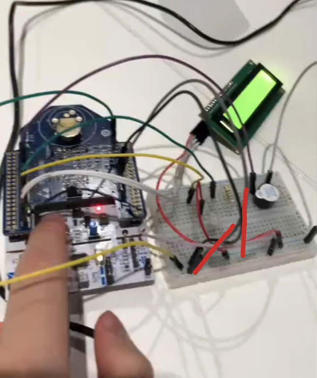

A fire rescue system that knows three states
I led a team of three to build an STM32 multi-sensor system with integrated sensor electronics. It won first place in the UTS Embedded Mechatronics System Workshop.
- Role
- Team lead · team of 3
- When
- Apr — May 2025
- Result
- 1st place, UTS Embedded Mechatronics System Workshop
- Stack
- STM32 · ToF sensor · LCD

Section01
Logic: Safe, Warning, Danger
The system runs a three-state finite-state machine. The current state drives the outputs: LEDs, an LCD and a buzzer.
- States
- 3
- Outputs
- LEDs · LCD · buzzer
- SafeState 1
- WarningInterrupt → ToF on
- DangerState 3
Section02
Sensing: an interrupt wakes the ToF
Entering the Warning level triggers an interrupt that activates a 4-zone time-of-flight proximity sensor, so close-range sensing switches on when it’s needed.
- Trigger
- Warning-level interrupt
- Sensor
- 4-zone ToF proximity

Section03
Result
First place in the UTS Embedded Mechatronics System Workshop.